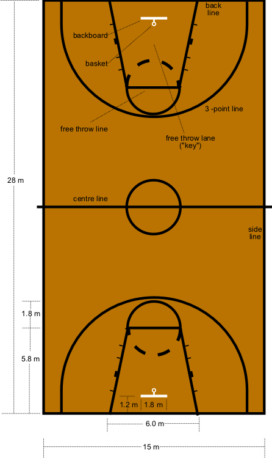

BASKET BALL

Rules and Regulations in Basket ball
The rules of basketball can vary slightly depending on the level of play (for example professional rules differ from college rules) or where the game is played (international rules are different from USA professional rules). These rule differences, however, are usually just variations on the basic game of basketball and the majority of the rules discussed below can be applied to most any game of basketball played.
The winner of a basketball game is the team with the most points. You get points by throwing the basketball through the opponent's hoop or basket. In regular play a basket made from within the three point line is worth 2 points and a basket shot from outside the three point line is worth three points. When shooting a free throw, each free throw is worth 1 point.
Rules for the offense
The basketball team on offense is the team with the basketball. When a player has the basketball there are certain rules they must follow:
- The player must bounce, or dribble, the ball with one hand while moving both feet. If, at any time, both hands touch the ball or the player stops dribbling, the player must only move one foot. The foot that is stationary is called the pivot foot.
- The basketball player can only take one turn at dribbling. In other words, once a player has stopped dribbling they cannot start another dribble. A player who starts dribbling again is called for a double-dribbling violation and looses the basketball to the other team. A player can only start another dribble after another player from either team touches or gains control of the basketball. This is usually after a shot or pass.
- The ball must stay in bounds. If the offensive team looses the ball out of bounds the other team gets control of the basketball.
- The players hand must be on top of the ball while dribbling. If they touch the bottom of the basketball while dribbling and continue to dribble this is called carrying the ball and the player will lose the ball to the other team.
- Once the offensive team crosses half court, they may not go back into the backcourt. This is called a backcourt violation. If the defensive team knocks the ball into the backcourt, then the offensive team can recover the ball legally.
Defensive Rules
The team on defense is the team without the basketball.
- The main rule for the defensive player is not to foul. A foul is described as gaining an unfair advantage through physical contact. There is some interpretation that has to be made by the referee, but, in general, the defensive player may not touch the offensive player in a way that causes the offensive player to lose the ball or miss a shot.
Rules for everyone
Although the foul rule is described above as a defensive rule, it applies exactly the same to all players on the court including offensive players.
Basketball players cannot kick the ball or hit it with their fist
No player can touch the basketball while it is traveling downward towards the basket or if it is on the rim. This is called goaltending. (touching the ball on the rim is legal in some games).
Every player on the court is subject to the same rules regardless of the position they play. The positions in basketball are just for team basketball strategy and there are no positions in the rules.
Basketball Court
